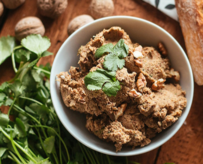

Відварену квасолю перебити в блендері з чорносливом та обсмаженим на сковороді, волоським горіхом. Додати спеції за смаком.
- квасоля (100г.)
- чорнослив (100г.)
- волоський горіх (5шт.)
- рослинне масло (2ст.л.)
Відварену квасолю перебити в блендері з чорносливом та обсмаженим на сковороді, волоським горіхом. Додати спеції за смаком.